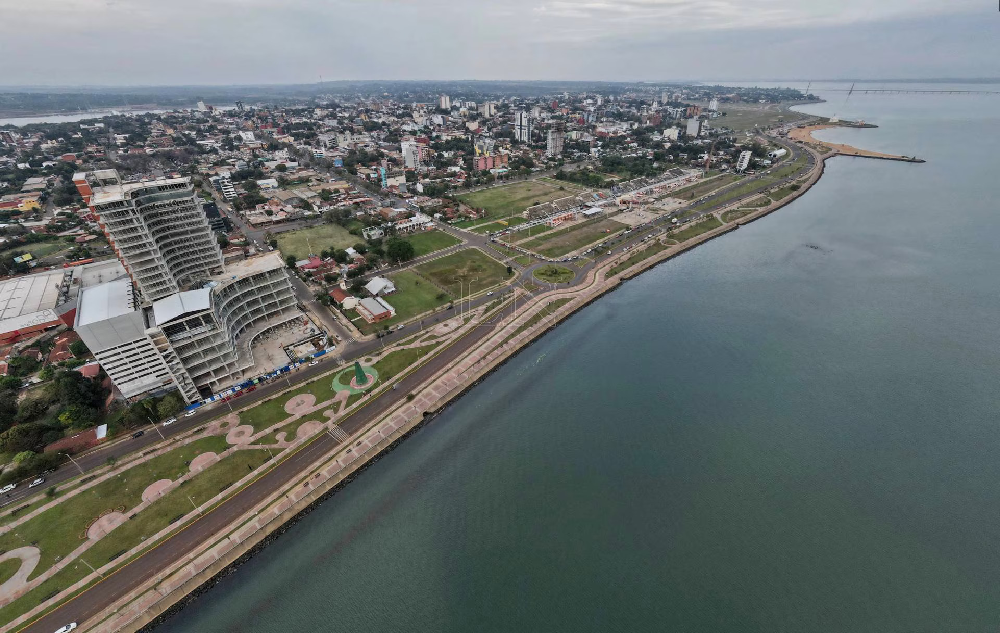
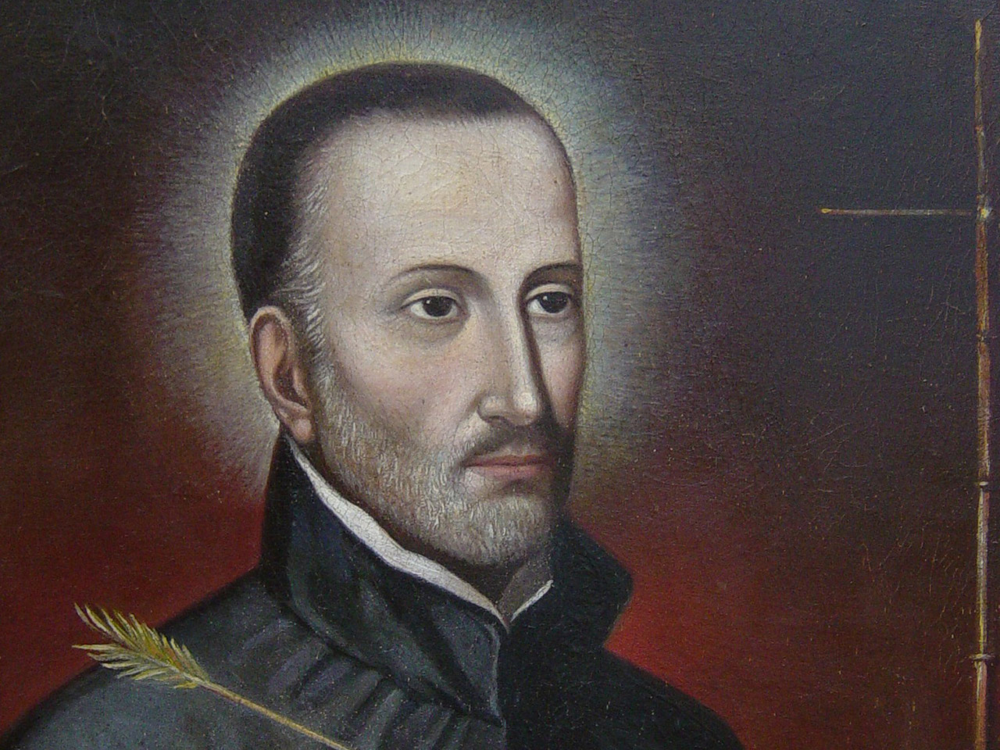

Ciudad de Encarnacion
Encarnación es una ciudad localizada al sur de la región oriental de la República del Paraguay. Es la capital del departamento de Itapúa y está situada a unos 370 km de la capital del país —Asunción—, conectada por la Ruta PY01. Sobre la margen derecha del río Paraná se encuentra su límite con la República Argentina, conectada a través del puente carretero-ferroviario San Roque González de Santa Cruz. Es un importante polo comercial fronterizo, manteniendo un fuerte vínculo e influencia con la vecina ciudad argentina de Posadas. Con su aglomerado urbano, más su fuerte economía y posición geopolítica, es la tercera ciudad más importante del país, detrás de Asunción y de Ciudad del Este.
La ciudad fue fundada el 25 de marzo de 1615 por el jesuita San Roque González de Santa Cruz, el primer santo paraguayo.
La pasión de Roque González siempre fue trabajar con los nativos para convertirlos al catolicismo, así fue que el 9 de mayo de 1609 Roque González de Santa Cruz ingresó a la Compañía de Jesús en Asunción y durante muchos años asumió la responsabilidad de misionero y fundador.
En Asunción manifestó a su superior y al gobernador sus propósitos de fundar una misión en Itapúa y luego de la aprobación de dicho cometido retornó a Itapúa, y el 25 de marzo de 1615 fundó la misión sobre el río Paraná, que bautizó Nuestra Señora de la Encarnación de Itapúa por la fecha conmemorativa de Nuestra Señora de la Encarnación.

San Roque González de Santa Cruz